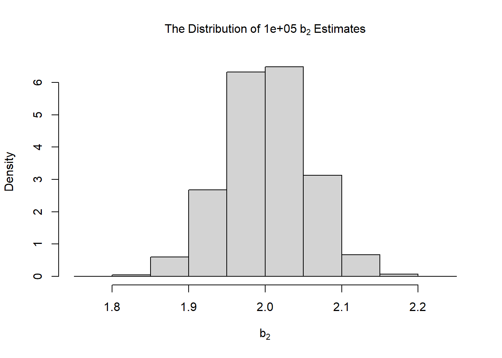

In Module 5 of ECON 706, we examine the finite sample properties of the Ordinary Least Squares (OLS) estimator. Using numerical sampling experiments and R-based simulations, we verify that under the classical assumptions—linearity, full column rank, and strict exogeneity—the OLS estimator is unbiased, meaning its expected value centers exactly on the true population parameters.
We also analyze the critical impact of model specification on estimator performance. Through mathematical derivations and simulations, we demonstrate how omitting relevant variables introduces bias, while including irrelevant variables, though maintaining unbiasedness, unnecessarily increases the variance of our estimates. These lessons establish the foundational “Best Linear Unbiased Estimator” (BLUE) properties essential for reliable statistical inference.
18.2 Population Estimates
We can use a sampling experiment to illustrate the sampling distribution of the least square estimates.
The \(\boldsymbol{X}\) matrix consists of our standard column of 1’s and a set of independent variables drawn from a random uniform distribution bounded between the values of 0 and 20.
The disturbance is drawn from a random normal such that \(\epsilon \sim N(0, 100)\)
We use the population parameters to construct \(\boldsymbol{y}\) and then generate the least squares estimates using the population data.
In the previous code chunk, we had access to the population of observations. In reality, we must often use sample data as population data are available or costly to obtain.
How representative are the least squares estimates when sample data are used?
In the code chunk below, we repeatedly draw a random sample from the data.
For each sample, we generate the least squares coefficients.
We then construct a histogram of the estimates.
As our sample size increases and number of samples increases, the distribution of the least squares estimates ‘centers’ on the true population parameter.
The mean and median of the distribution are roughly equal to the true population parameter.
rm(list =ls())set.seed(1234)nrows <-1000000ncols <-3x <-matrix(0, nrows, ncols) x[,1] <-1for (l in2: ncols) { x[,l] <-runif(nrows, min =0, max =20)gc() }beta <-c(1,2,4)y <- x %*% beta +rnorm(nrows, sd =10)bhat_pop <-solve(t(x) %*% x) %*%t(x) %*% ypopdata <-data.frame(y,x)#Sample size = 1000#Number of samples = 10000nsample <-1000nreps <-10000bhat <-matrix(ncol = ncols, nrow = nreps)for(i in1:nreps){ sample <- popdata[sample(1:nrows,nsample),] bhat[i,] <-lm(y ~ X2 + X3, data = sample)$coefficients}#Histogram of b2hist(bhat[,2],cex.main =1,main =bquote(The ~ Distribution ~ of ~100000~ b[2] ~ Estimates), xlab =bquote(b[2]), freq = F)

18.4 Unbiasedness
The sampling distribution of \(\boldsymbol{b_2}\) suggests that the coefficients are “centered” at the true population parameter, that is, on average, the estimates are equal to the true parameter or
\[
\frac{1}{n}\sum_{i = 1}^n b_{2i} = \beta_2
\]
Each least square’s coefficient is, in fact, a random variable drawn from an underlying distribution.
With repeated sampling, the central tendency of the distribution of each parameter estimate equals the population parameter.
The parameter estimates appear to be unbiased, that is, on average, the parameter estimates are equal to the population parameters.
The distribution has a variance, underlying the point that the least squares estimates are random variables.
The parameter estimates also appear to follow a normal distribution as \(nreps\) and \(N\) increase.
In the code chunk below, we estimate the sampling distribution for \(\boldsymbol{b_3}\) with a sample size of 100 and 20,000 samples. The sampling distribution appears to be centered at \(\boldsymbol{\beta_3}\). If we changed the sample size, the variance of the sampling distribution would also change.
An estimator is a strategy, formula, or algorithm for using sample data drawn from a population to estimate the parameters in the population.
The finite sample properties of the least square estimator require the underlying assumptions to hold.
The finite sample properties are based on repeated sampling from the population.
The concept of unbiasedness, for example, depends on repeated sampling of the population.
An estimator is considered to be unbiased if the average of the estimator is equal to the population parameter.
While one estimate may be too high or too low, on average, the estimates for an unbiased estimator gravitate to the value of the population parameter.
The asymptotic properties of the estimator are obtained from “large” samples or the complete population.
18.6 Unbiased Estimator
Recall, under the assumption of linearity, full column rank, and strict exogeneity that we can obtain and expand upon the least squares estimator: \[\boldsymbol{b = (X^T\ X)^{-1}\ X^T\ y}\]
If the assumption of strict exogeneity holds, then \(\boldsymbol{E[X^T\ \epsilon\ |\ X]=0}\) and \[\boldsymbol{E[b\ |\ X] = \beta}\]
18.7 Unbiased Estimation
Given the assumptions of the least squares estimator, we can show that the estimator is unbiased. \[\boldsymbol{E[b\ |\ X] = \beta}\]
What does this mean for a particular sample of the population?
For any sample of the population, the least squares estimator has the expectation \(\boldsymbol{\beta}\). \[\boldsymbol{E[b] = E_X[E[b\ |\ x]] = \beta}\] When we average this expectation over all the possible values of \(\boldsymbol{X}\), we obtain the unconditional mean is \(\boldsymbol{\beta}\).
Given that the expectation of \(\boldsymbol{b}\) conditional on \(\boldsymbol{X}\) is equal to \(\boldsymbol{\beta}\), then the least squares estimator is unbiased in every sample.
If \(\boldsymbol{X}\) and \(\boldsymbol{z}\) are orthogonal, then \(\boldsymbol{X^T z}= 0\).
In other words, if \(\boldsymbol{z}\) is not relevant, then the least squares estimator is unbiased: \[\boldsymbol{E[b|X,z] = \beta + (X^T\ X)^{-1}\ E[X^Tz\ \gamma|X,z] = \beta}\]
But, if \(\boldsymbol{X}\) and \(\boldsymbol{z}\) are not orthogonal, then the least squares estimator is biased.
18.9 Omitted Variables in R
In the code chunk below, we create an example of omitted variable bias.
The code chunk does the following:
Creates \(\boldsymbol{X_1}\) as a normally distributed variable with \(\mu = 50\) and \(\sigma = 10\)
Creates \(\boldsymbol{X_2}\) as a variable that is highly correlated with \(\boldsymbol{X_1}\)
As you can see, by omitting \(\boldsymbol{X_2}\) from the second regression, the estimated coefficient, \(b_1\), is biased downward. When we omit \(\boldsymbol{X_1}\), the estimated coefficient, \(b_2\), is biased upward.
rm(list =ls())set.seed(1234)library(modelsummary)n_pop <-100000# Create X1 and X2 so X1 and X2 are correlatedx1 <-rnorm(n_pop, mean =50, sd =10)x2 <-0.7* x1 +rnorm(n_pop, mean =10, sd =5)beta_1 <-2beta_2 <--1epsilon <-rnorm(n_pop, mean =0, sd =5)y <-100+ (beta_1 * x1) + (beta_2 * x2) + epsilonpop_data <-tibble(y, x1, x2)mod_correct <-lm(y ~ x1 + x2, data = pop_data)mod_omit_x2 <-lm(y ~ x1, data = pop_data)mod_omit_x1 <-lm(y ~ x2, data = pop_data)modelsummary(list(mod_correct, mod_omit_x2, mod_omit_x1))
(1)
(2)
(3)
(Intercept)
100.013
90.049
114.671
(0.087)
(0.114)
(0.213)
x1
2.001
1.299
(0.003)
(0.002)
x2
-1.001
0.896
(0.003)
(0.005)
Num.Obs.
100000
100000
100000
R2
0.884
0.771
0.271
R2 Adj.
0.884
0.771
0.271
AIC
606768.9
675125.6
790853.3
BIC
606807.0
675154.1
790881.9
Log.Lik.
-303380.466
-337559.788
-395423.662
F
382474.005
336633.456
37253.088
RMSE
5.03
7.08
12.62
18.10 Irrelevant Variables
While omitting a relevant variable leads to omitted variable bias, what does the inclusion of an irrelevant variable do to the least squares estimator?
Let the true regression model be:
\[\boldsymbol{y = X\beta + \epsilon}\]
We add a variable, \(\boldsymbol{z}\), so the regression model becomes: